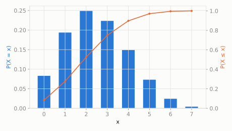

Discrete extended catalog
Negative Hypergeometric
scipy.stats.nhypergeom
Intuition
Like drawing marbles from a bag without replacement, but instead of stopping after a fixed number of draws, you keep drawing until you've collected a target number of 'failures' -- the negative hypergeometric counts how many 'successes' you happened to pick up along the way.
Formula
\[ f(k;M,n,r) = \frac{\binom{k+r-1}{k}\binom{M-r-k}{n-k}}{\binom{M}{n}}, \quad k=0,1,\ldots,n \]
| parameter | default used here | meaning |
|---|
M | 20 | total population size |
n | 7 | number of 'success' (red) objects in the population |
r | 5 | number of 'failure' (blue) objects to wait for |
Use cases
- Quality control acceptance sampling (draw until a fixed number of defects)
- Ecological capture-recapture study design
A funny example
A bin has 20 socks, 7 of them are the kid's favorite striped ones. The kid pulls socks out one at a time (without putting any back) until they've pulled out 5 plain (non-striped) socks, and counts how many striped socks they happened to grab in the process.
What's the probability the kid grabbed exactly 3 striped socks along the way?
Solve it with scipy.stats
import scipy.stats as stats
import numpy as np
dist = stats.nhypergeom(M=20, n=7, r=5)
print('P(exactly 3 striped):', round(dist.pmf(3), 4))
print('expected striped count:', round(dist.mean(), 4))
P(exactly 3 striped): 0.2235
expected striped count: 2.5

Theoretical shape at the default parameters above (blue = density/PMF, orange = CDF).